物理［原子分野 No.1〜No.14］
90分 完全マスター教材
設計思想：元PDFの内容を削らず、そのまま保持したうえで、各単元を「理解 → 覚える → 計算 → 歴史・背景 → 自力再現」の一まとまりとして学習する。最後だけ全範囲を横断して比較する。
90分No.1〜14PDF内容完全保持印刷・PDF復習対応手書き不要
90分の使い方
全体像を俯瞰。各No.のテーマを一度確認。
No.1〜14を単元完結型で学ぶ。
混同しやすい事項を横断比較。
最終30秒チェック。
重要：「全範囲暗記 → 全範囲計算 → 全範囲歴史」にはしない。各No.の中で知識を結びつけ、最後だけ横断する。
学習ルール
- まず30秒で見出しを見る。 この単元が何を説明するのか把握する。
- 解説を読む。 「なぜこの式が出てくるのか」まで理解する。
- 元PDFを確認する。 問い・例題・計算過程を省略しない。
- 一度画面／紙から目を離す。 下の再現チェックを頭の中または口頭で答える。手書きは不要。
- 答え合わせ。 思い出せなかった部分だけ戻る。
「分かったつもり」を防ぐため、再現チェックを各単元に必ず入れる。ただし、元PDF本文・例題・計算を削除することはしない。
目次
- 最初に：超重要な単位・定数
- No.1 電子の発見とトムソンの比電荷測定
- No.2 ミリカンの油滴実験と電気量の量子化
- No.3 光電効果とアインシュタインの光量子仮説
- No.4 X線の発生とブラッグ反射
- No.5 コンプトン効果と光子の運動量
- No.6 ド・ブロイ波・フランク＝ヘルツの実験・不確定性原理
- No.7 ラザフォード散乱と水素の線スペクトル
- No.8 ボーアの原子模型（導出①：仮説と軌道半径）
- No.9 ボーアの原子模型（導出②：エネルギー準位と定数）
- No.10 原子核の構造と放射崩壊
- No.11 放射線と単位の厳密な定義
- No.12 質量欠損と結合エネルギー
- No.13 核反応・核分裂・核融合の実戦計算
- No.14 素粒子分類と自然界の4つの基本相互作用
最初に：超重要な単位・定数
ここはNo.1〜14を横断して使う共通土台。最初の5分で「見たら意味が言える」状態にする。
1. 電子ボルト（エレクトロンボルト: $\text{eV}$）の完全定義
1個の電子（電気量 $e = 1.602 \times 10^{-19} \text{ C}$）が $1 \text{ V}$ の電位差で加速されたときに得る静電エネルギー。
2. 統一原子質量単位（$\text{u}$）とエネルギー換算
質量数12の炭素原子 ${}^{12}\text{C}$ の原子の質量を $12\text{ u}$ と定義する。
3. 入試頻出の数値定数（問題文で与えられるが暗記も推奨）
- 電気素量: $e \approx 1.602 \times 10^{-19} \text{ C}$
- 電子の静止質量: $m_e \approx 9.109 \times 10^{-31} \text{ kg}$
- 陽子の静止質量: $m_p \approx 1.673 \times 10^{-27} \text{ kg} \approx 1.0073 \text{ u}$
- 中性子の静止質量: $m_n \approx 1.675 \times 10^{-27} \text{ kg} \approx 1.0087 \text{ u}$
- プランク定数: $h \approx 6.626 \times 10^{-34} \text{ J}\cdot\text{s}$ ($hc \approx 1240 \text{ eV}\cdot\text{nm}$)
- 真空中の光速: $c \approx 3.00 \times 10^8 \text{ m/s}$
- アボガドロ定数: $N_A \approx 6.02 \times 10^{23} \text{ /mol}$
No.1 電子の発見とトムソンの比電荷測定
① 理解レイヤー
1. 電子線の電場偏向における式誘導
初速 $v_0$ で平行板電極（長さ $L$、間隔 $d$、電圧 $V$）に入射した質量 $m$、電荷 $-e$ の電子の運動：
- 電場 $E = \frac{V}{d}$ から受ける静電力: $F = eE = \frac{eV}{d}$（上向き）
- 鉛直方向の加速度: $a = \frac{eE}{m} = \frac{eV}{md}$
- 極板間の通過時間: $t_1 = \frac{L}{v_0}$
- 極板脱出時の鉛直速度: $v_y = a t_1 = \frac{eEL}{m v_0}$
- 極板脱出時の鉛直変位: $y_1 = \frac{1}{2}a t_1^2 = \frac{eEL^2}{2m v_0^2}$
- 偏向角 $\theta$: $\tan\theta = \frac{v_y}{v_0} = \frac{eEL}{m v_0^2}$
2. 速度選択器（交差電磁場）による初速 $v_0$ の決定
電場 $E$ と垂直に磁場 $B$ を加え、ローレンツ力 $f = ev_0 B$ と静電力 $eE$ を釣り合わせて電子を直進させる：
3. 比電荷 $\frac{e}{m}$ の計算式と標準値
速度 $v_0 = \frac{E}{B}$ を偏向式に代入：
② 30秒再現チェック
本文をいったん見ないで、次の問いに答える。答えられなければ、元PDFまたは上の解説に戻る。
- 電子線が電場で曲がるとき、力・加速度・時間・速度・変位をどうつなぐか？
- 速度選択器では、電場と磁場のつり合いから何が決まるか？
- トムソンの実験から最終的に何（比電荷）を求めるか？
元PDF No.1（クリックで表示）
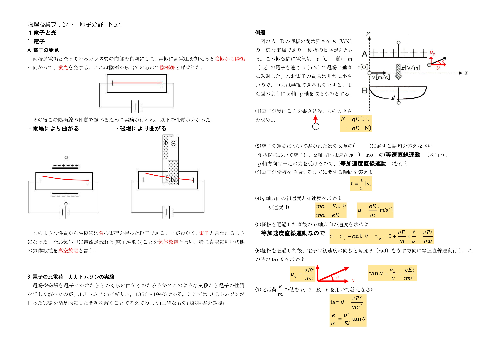
なぜこの現象・法則になるか説明できる
重要事項・公式を見ずに言える
典型問題で式を立てる順序が分かる
No.2 ミリカンの油滴実験と電気量の量子化
① 理解レイヤー
1. 粘性抵抗とストークスの法則からの油滴半径 $r$ 導出
油滴（半径 $r$、密度 $\rho$、空気密度 $\rho_0$、空気の粘性率 $\eta$）が速度 $v$ で運動するとき受ける抵抗力 $F = 6\pi \eta r v$。
電場なしで端末速度 $v_1$ で鉛直下方に等速運動するとき（浮力を考慮）：
2. 上下運動による電荷 $q$ の決定
- 電場をかけ静止させる場合（極板間隔 $d$、電圧 $V$）: $$qE = m'g \implies q \frac{V}{d} = \frac{4}{3}\pi r^3 (\rho - \rho_0) g$$
- 電場をかけ端末速度 $v_2$ で上昇させる場合: $$qE - \frac{4}{3}\pi r^3 (\rho - \rho_0) g = 6\pi \eta r v_2 \implies qE = 6\pi \eta r (v_1 + v_2)$$ $$q = \frac{6\pi \eta r d}{V} (v_1 + v_2)$$
3. 電気量の不連続性（量子化）
どのような油滴の電荷 $q$ を測定しても、必ず最小単位 $e$ の整数倍になる：
② 30秒再現チェック
本文をいったん見ないで、次の問いに答える。答えられなければ、元PDFまたは上の解説に戻る。
- ミリカンの油滴実験で、重力・浮力・電気力をどう関係づけるか？
- 油滴の電気量がどのように量子化されていると判断するか？
- 電気素量 e と電子の電気量の関係を説明できるか？
元PDF No.2（クリックで表示）
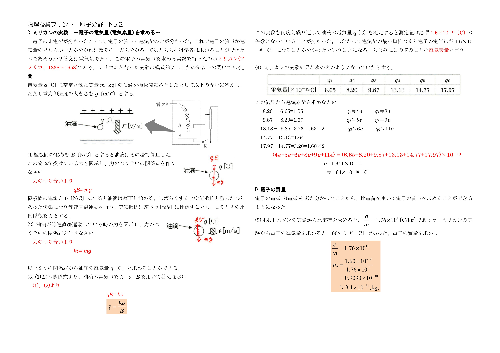
なぜこの現象・法則になるか説明できる
重要事項・公式を見ずに言える
典型問題で式を立てる順序が分かる
No.3 光電効果とアインシュタインの光量子仮説
① 理解レイヤー
1. 光量子仮説と光電方程式
光はエネルギー $E = h\nu = \frac{hc}{\lambda}$、運動量 $p = \frac{h}{\lambda}$ をもつ粒子（光子）である。
2. 限界振動数 $\nu_0$ と限界波長 $\lambda_0$
光電効果が起こる条件（$K_{\max} \ge 0$）の限界値：
3. 阻止電圧 $V_0$ と $I-V$ 特性グラフ（超重要）
光電管に逆電圧 $V_0$ をかけて光電流をゼロにする（$K_{\max} = e V_0$）。
- $V_0 - \nu$ グラフ: 傾きは $\frac{h}{e}$（一定）、横軸切片は限界振動数 $\nu_0$、縦軸切片は $-\frac{W}{e}$。
- 光の強さ（光子数）を変えた場合: 飽和電流の大きさのみ変化（阻止電圧 $V_0$ は不変）。
- 光の振動数 $\nu$ を大きくした場合: 阻止電圧 $V_0$ が高くなる（負の側へ深くなる）。
② 30秒再現チェック
本文をいったん見ないで、次の問いに答える。答えられなければ、元PDFまたは上の解説に戻る。
- 光電効果で、光の振動数と光電子の運動エネルギーはどう関係するか？
- 仕事関数・限界振動数・限界波長の関係を言えるか？
- 阻止電圧と光電流のグラフから何を読み取るか？
元PDF No.3（クリックで表示）
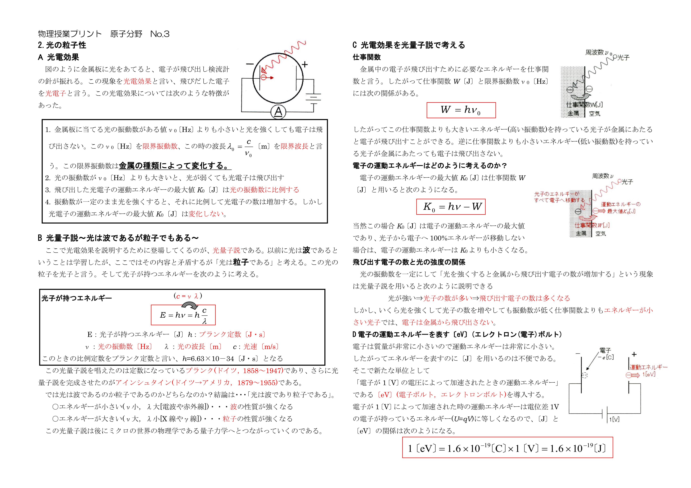
なぜこの現象・法則になるか説明できる
重要事項・公式を見ずに言える
典型問題で式を立てる順序が分かる
No.4 X線の発生とブラッグ反射
① 理解レイヤー
1. 連続X線と最短波長 $\lambda_0$ の導出
加速電圧 $V$ で加速された電子の運動エネルギー $eV$ が、1個の光子に全量変換される限界波長：
2. 特性X線（固有X線）の発生メカニズム
高速電子がターゲット原子の内殻電子（K殻など）を弾き飛ばし、生じた空孔に外殻電子（L殻・M殻など）が遷移する際、軌道間のエネルギー差 $\Delta E$ を光子として放出する（$\Delta E = h\nu$）。波長はターゲット金属固有。電圧を上げてもピーク波長は変化せず強度が上がる。
3. ブラッグの干渉条件
格子間隔 $d$ の結晶表面に対し、結晶面となす角 $\theta$（入射角 $90^\circ - \theta$ と混同しないこと）でX線を入射：
② 30秒再現チェック
本文をいったん見ないで、次の問いに答える。答えられなければ、元PDFまたは上の解説に戻る。
- X線は何で、どのように発生するか？
- 連続X線の最短波長をエネルギー保存からどう求めるか？
- ブラッグ反射の干渉条件を言えるか？
元PDF No.4（クリックで表示）
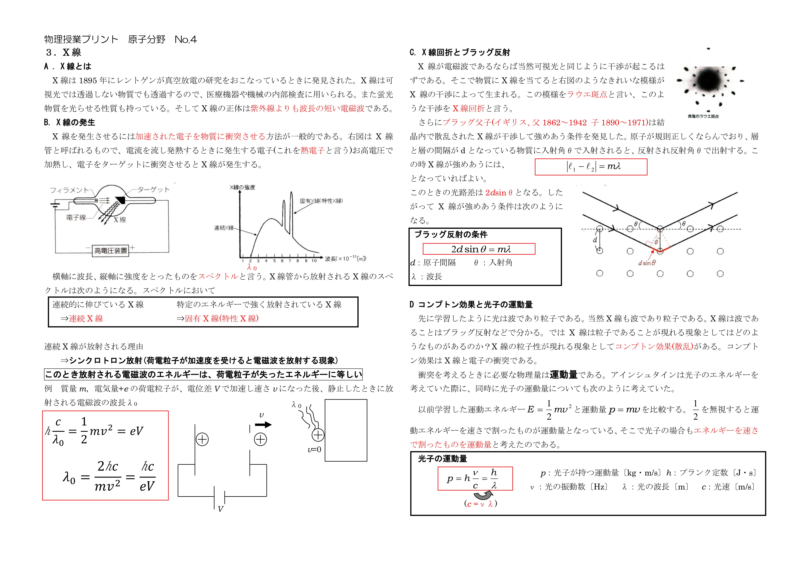
なぜこの現象・法則になるか説明できる
重要事項・公式を見ずに言える
典型問題で式を立てる順序が分かる
No.5 コンプトン効果と光子の運動量
① 理解レイヤー
1. 光子の運動量 $p$ の導出
相対論的関係式 $E = \sqrt{p^2 c^2 + m_0^2 c^4}$ （静止質量 $m_0 = 0$）より：
2. コンプトン効果の完全誘導ステップ
静止電子（質量 $m$）に波長 $\lambda$ の光子が入射。散乱角 $\theta$ で波長 $\lambda'$ の光子が散乱され、電子が角度 $\phi$、速度 $v$ で弾き飛ばされたとする。
- 入射方向の運動量保存: $\frac{h}{\lambda} = \frac{h}{\lambda'}\cos\theta + mv\cos\phi$
- 垂直方向の運動量保存: $0 = \frac{h}{\lambda'}\sin\theta - mv\sin\phi$
- エネルギー保存則: $h\frac{c}{\lambda} + m c^2 = h\frac{c}{\lambda'} + \sqrt{m^2 c^4 + m^2 v^2 c^2}$ （非相対論近似では $h\frac{c}{\lambda} = h\frac{c}{\lambda'} + \frac{1}{2}mv^2$）
1, 2の式を2乗して足し合わせ、$\phi$ を消去して整理することで波長変化 $\Delta \lambda$ を得る：
② 30秒再現チェック
本文をいったん見ないで、次の問いに答える。答えられなければ、元PDFまたは上の解説に戻る。
- 光子の運動量を波長・エネルギーからどう表すか？
- コンプトン効果で保存される量は何か？
- 波長変化が散乱角とどう関係するか？
元PDF No.5（クリックで表示）
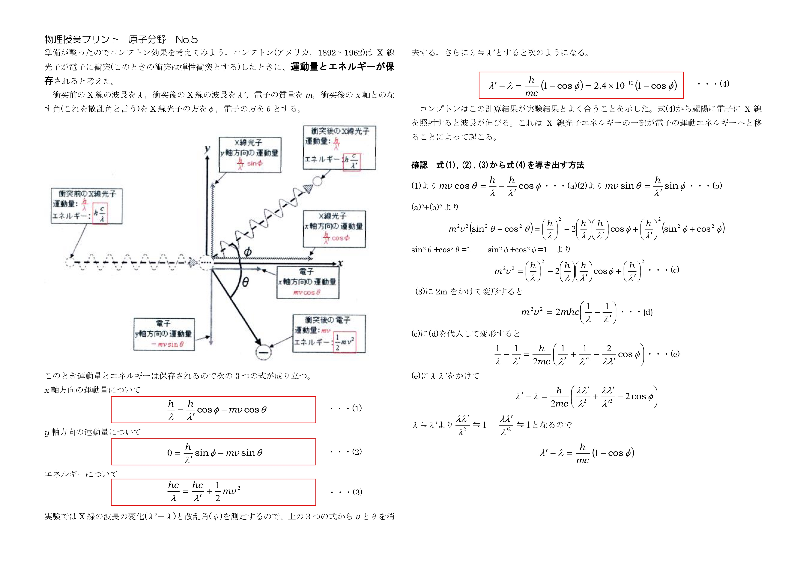
なぜこの現象・法則になるか説明できる
重要事項・公式を見ずに言える
典型問題で式を立てる順序が分かる
No.6 ド・ブロイ波・フランク＝ヘルツの実験・不確定性原理
① 理解レイヤー
1. 物質波（ド・ブロイ波長 $\lambda$）の3変形
2. フランク＝ヘルツの実験（量子化の実証）
水銀蒸気中で電子を加速し、電圧 $V$ と電流 $I$ の関係を測定。
- 電圧を上げると電流が増加するが、$V = 4.9 \text{ V}, 9.8 \text{ V}, 14.7 \text{ V} \dots$ （$4.9\text{ V}$ の整数倍）で電流が急減する。
- 理由: 水銀原子の第一励起エネルギーが $4.9 \text{ eV}$ であり、電子の運動エネルギーが $4.9 \text{ eV}$ に達すると水銀原子と完全非弾性衝突を起こして運動エネルギーを全量奪われるため。
- 意義: 原子のエネルギー準位が**不連続（量子化）**であることを直接証明した。
3. ハイゼンベルクの不確定性原理
位置の不確定さ $\Delta x$ と運動量の不確定さ $\Delta p$ の測定限界：
② 30秒再現チェック
本文をいったん見ないで、次の問いに答える。答えられなければ、元PDFまたは上の解説に戻る。
- ド・ブロイ波長を運動量・速度・運動エネルギーからどう表すか？
- フランク＝ヘルツの実験は何の量子化を示したか？
- 不確定性原理では何と何の積に制限があるか？
元PDF No.6（クリックで表示）
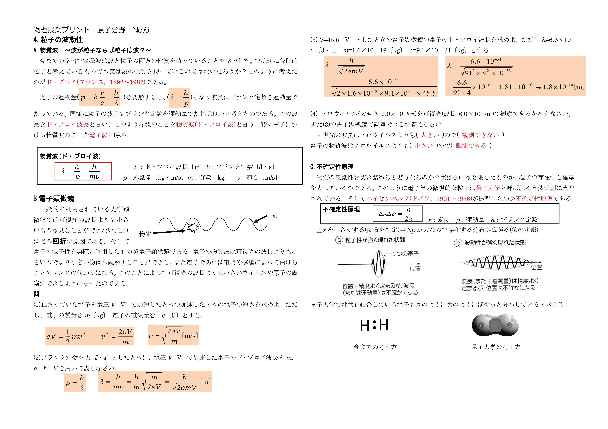
なぜこの現象・法則になるか説明できる
重要事項・公式を見ずに言える
典型問題で式を立てる順序が分かる
No.7 ラザフォード散乱と水素の線スペクトル
① 理解レイヤー
1. ラザフォード散乱
$\alpha$ 粒子（${}^4_2\text{He}^{2+}$）を金箔に照射。大多数は素通りするが、一部が超広角に散乱されることから、原子の質量のほぼ全てと正電荷が中心の微小領域（$\approx 10^{-15}\text{ m}$ の原子核）に集中していることを解明。
2. 水素原子の線スペクトル系列（リュードベリの公式）
| 系列名 | 下限値 $m$ | 遷移元 $n$ | 観測領域 |
|---|---|---|---|
| ライマン系列 | $m = 1$ | $n = 2, 3, 4, \dots$ | 紫外線領域（高エネルギー） |
| バルマー系列 | $m = 2$ | $n = 3, 4, 5, \dots$ | 可視光線〜近紫外線領域 |
| パッシェン系列 | $m = 3$ | $n = 4, 5, 6, \dots$ | 赤外線領域 |
| ブラケット系列 | $m = 4$ | $n = 5, 6, 7, \dots$ | 赤外線領域 |
② 30秒再現チェック
本文をいったん見ないで、次の問いに答える。答えられなければ、元PDFまたは上の解説に戻る。
- ラザフォード散乱から原子核について何が分かったか？
- 水素の線スペクトルは連続スペクトルとどう違うか？
- リュードベリの公式を何の計算に使うか？
元PDF No.7（クリックで表示）
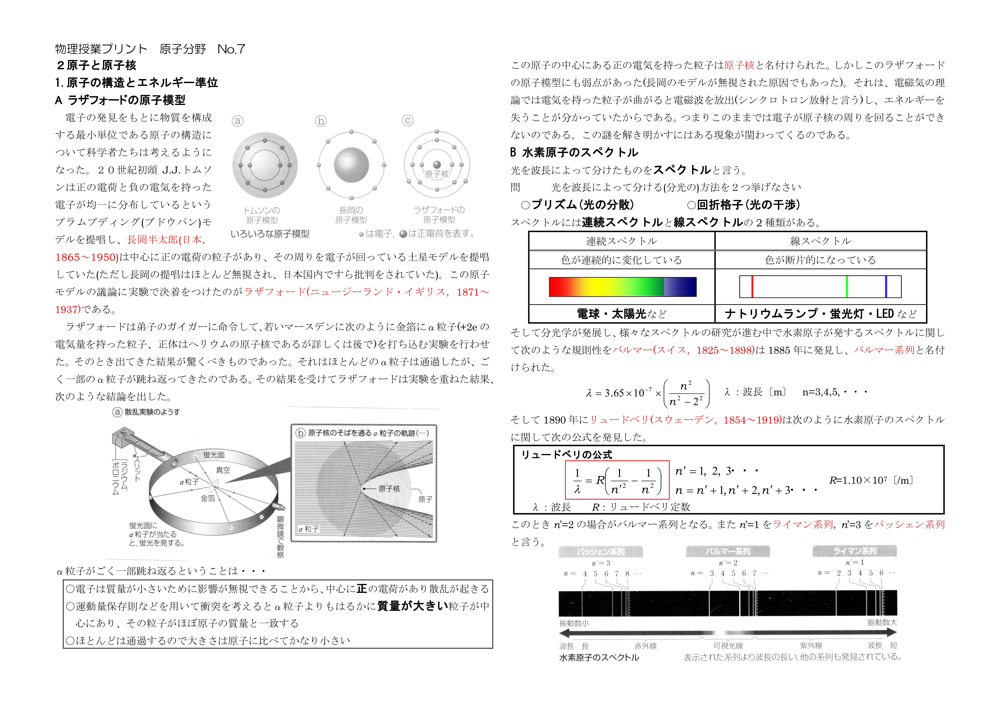
なぜこの現象・法則になるか説明できる
重要事項・公式を見ずに言える
典型問題で式を立てる順序が分かる
No.8 ボーアの原子模型（導出①：仮説と軌道半径）
① 理解レイヤー
1. ボーアの2大仮説
- 量子条件: 電子波の定常波条件（$2\pi r = n\lambda$）より角運動量が量子化される。
$$m v r = n \frac{h}{2\pi} \quad (n = 1, 2, 3, \dots)$$
- 振動数条件: 軌道間の遷移にともない、エネルギー差に相当する光子を放出演奏する。
$$h\nu = E_n - E_m$$
2. 軌道半径 $r_n$ の厳密導出
クーロン力による等速円運動の運動方程式:
量子条件 $v = \frac{nh}{2\pi m r}$ を代入して $v$ を消去：
② 30秒再現チェック
本文をいったん見ないで、次の問いに答える。答えられなければ、元PDFまたは上の解説に戻る。
- ボーアの2つの仮説は何か？
- 量子条件から軌道半径をどう導くか？
- 水素原子のスペクトルとボーア模型をどう結びつけるか？
元PDF No.8（クリックで表示）
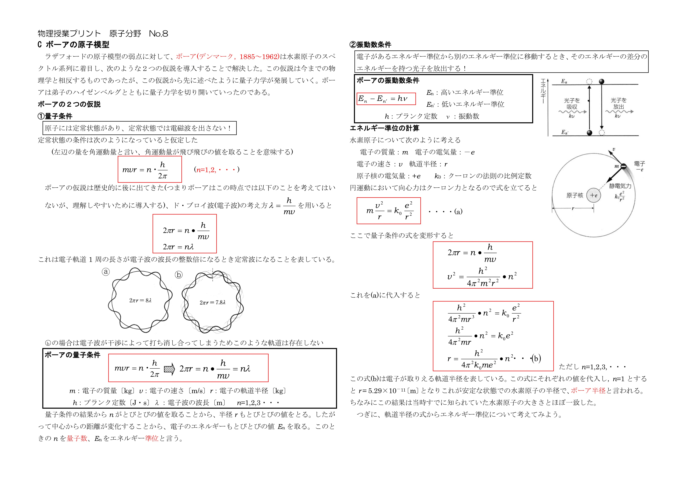
なぜこの現象・法則になるか説明できる
重要事項・公式を見ずに言える
典型問題で式を立てる順序が分かる
No.9 ボーアの原子模型（導出②：エネルギー準位と定数）
① 理解レイヤー
1. エネルギー関係式とエネルギー準位 $E_n$ の導出
- 運動エネルギー: $K = \frac{1}{2}mv^2 = \frac{1}{8\pi\varepsilon_0}\frac{e^2}{r}$
- 位置エネルギー（無限遠基準）: $U = -\frac{1}{4\pi\varepsilon_0}\frac{e^2}{r}$
- 全エネルギー: $E = K + U = -\frac{1}{8\pi\varepsilon_0}\frac{e^2}{r}$
$r_n$ を代入してエネルギー準位 $E_n$ を算出：
2. リュードベリ定数 $R$ の論理導出
振動数条件 $h\frac{c}{\lambda} = E_n - E_m$ より：
② 30秒再現チェック
本文をいったん見ないで、次の問いに答える。答えられなければ、元PDFまたは上の解説に戻る。
- 電子の全エネルギーを運動エネルギーと位置エネルギーからどう表すか？
- エネルギー準位 E_n の形を導けるか？
- リュードベリ定数がどこから現れるか説明できるか？
元PDF No.9（クリックで表示）
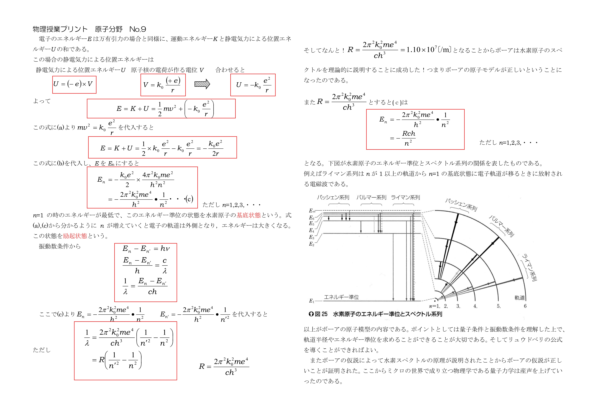
なぜこの現象・法則になるか説明できる
重要事項・公式を見ずに言える
典型問題で式を立てる順序が分かる
No.10 原子核の構造と放射崩壊
① 理解レイヤー
1. 各種放射崩壊の反応式一覧（電荷数・質量数保存）
- $\alpha$ 崩壊（ヘリウム核 ${}^4_2\text{He}$ を放出）: $${}^A_Z \text{X} \longrightarrow {}^{A-4}_{Z-2} \text{Y} + {}^4_2 \text{He}$$
- $\beta^-$ 崩壊（中性子が分解: $n \to p + e^- + \bar{\nu}_e$）: $${}^A_Z \text{X} \longrightarrow {}^A_{Z+1} \text{Y} + {}^0_{-1} e + \bar{\nu}_e$$
- $\beta^+$ 崩壊（陽電子崩壊）（陽子が分解: $p \to n + e^+ + \nu_e$）: $${}^A_Z \text{X} \longrightarrow {}^A_{Z-1} \text{Y} + {}^0_{+1} e + \nu_e$$
- 電子捕獲（EC: Electron Capture）（K殻電子を吸収: $p + e^- \to n + \nu_e$）: $${}^A_Z \text{X} + {}^0_{-1} e \longrightarrow {}^A_{Z-1} \text{Y} + \nu_e$$
- $\gamma$ 崩壊（励起状態から基底状態へ遷移）: $${}^A_Z \text{X}^* \longrightarrow {}^A_Z \text{X} + \gamma \quad (\text{質量数・原子番号とも変化なし})$$
2. 崩壊法則と半減期 $T$
② 30秒再現チェック
本文をいったん見ないで、次の問いに答える。答えられなければ、元PDFまたは上の解説に戻る。
- 原子核は何から構成されるか？
- 放射崩壊で質量数・原子番号はどう変化するか？
- 半減期と崩壊法則をどのように結びつけるか？
元PDF No.10（クリックで表示）
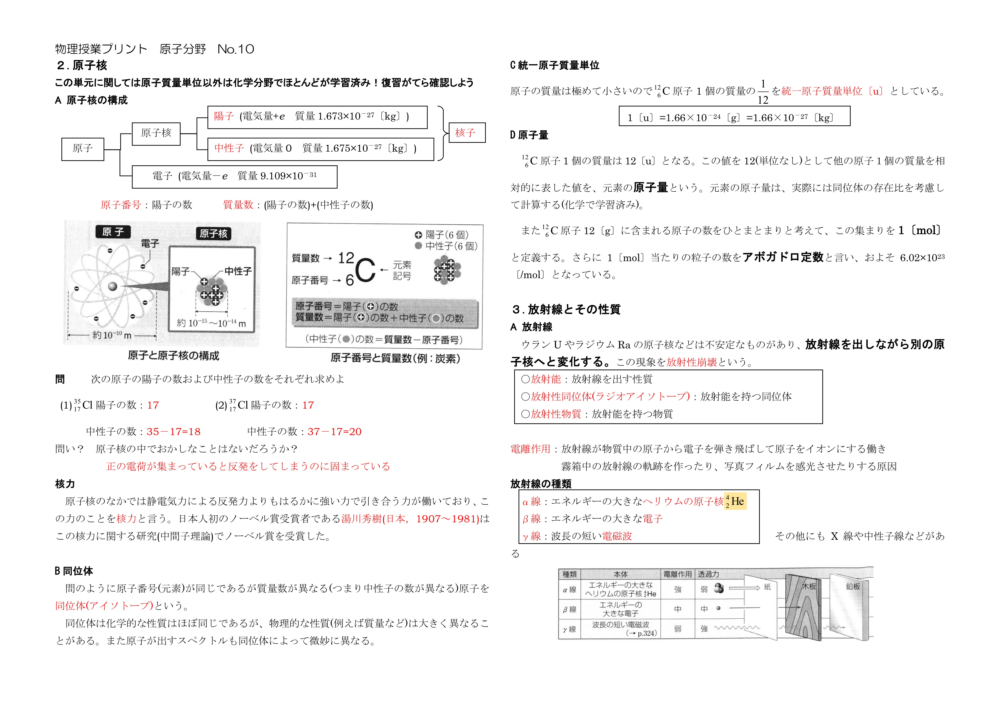
なぜこの現象・法則になるか説明できる
重要事項・公式を見ずに言える
典型問題で式を立てる順序が分かる
No.11 放射線と単位の厳密な定義
① 理解レイヤー
| 物理量 | 単位名称 | 記号 | 定義と換算式 |
|---|---|---|---|
| 放射能（Activity） | ベクレル | $\text{Bq}$ | 1秒間に崩壊する原子核の数（$1 \text{ Bq} = 1 \text{ 崩壊/秒}$）。 $A(t) = \lambda N(t) = \frac{\ln 2}{T} N(t)$ |
| 吸収線量（Absorbed Dose） | グレイ | $\text{Gy}$ | 物質 $1 \text{ kg}$ あたりが放射線から吸収したエネルギー。 $1 \text{ Gy} = 1 \text{ J/kg}$ |
| 線量当量（Equivalent Dose） | シーベルト | $\text{Sv}$ | 人体への人体生物学的影響度を表す量。 $\text{Sv} = \text{Gy} \times w_R$ （$w_R$: 放射線荷重係数。$\gamma, \beta$線$=1$, $\alpha$線$=20$） |
② 30秒再現チェック
本文をいったん見ないで、次の問いに答える。答えられなければ、元PDFまたは上の解説に戻る。
- α線・β線・γ線の違いを説明できるか？
- Bq・Gy・Svはそれぞれ何を表す単位か？
- 放射線の利用と人体への影響を区別して説明できるか？
元PDF No.11（クリックで表示）
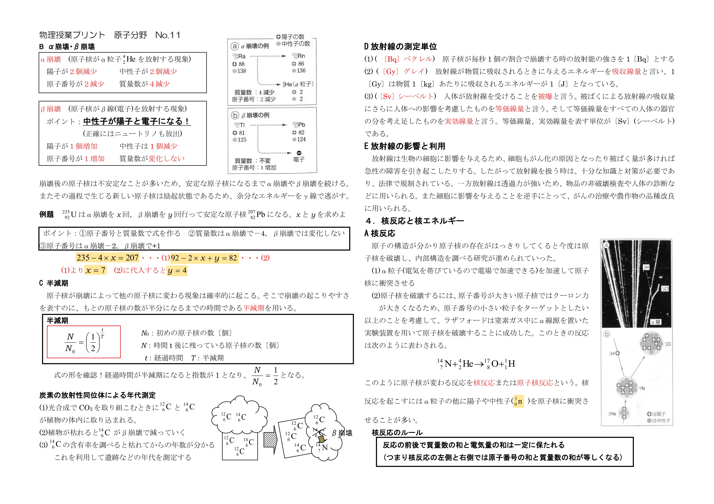
なぜこの現象・法則になるか説明できる
重要事項・公式を見ずに言える
典型問題で式を立てる順序が分かる
No.12 質量欠損と結合エネルギー
① 理解レイヤー
1. 質量欠損 $\Delta m$
構成核子（陽子 $Z$ 個、中性子 $A-Z$ 個）の個別の和の質量よりも、結合した原子核の質量 $M$ の方が小さくなる現象：
2. 結合エネルギー $E_b$ の計算
3. 1核子あたりの結合エネルギー $\frac{E_b}{A}$
原子核の強固さ（安定度）の指標。質量数 $A \approx 56$（鉄 ${}^{56}\text{Fe}$）のときに最大値（約 $8.8 \text{ MeV/核子}$）をとり最も安定。これより軽い核は「核融合」、重い核は「核分裂」によってより安定な状態へ遷移しエネルギーを放出する。
② 30秒再現チェック
本文をいったん見ないで、次の問いに答える。答えられなければ、元PDFまたは上の解説に戻る。
- 質量欠損 Δm は何を意味するか？
- E=mc²から結合エネルギーをどう求めるか？
- 1核子あたりの結合エネルギーは何を比較する量か？
元PDF No.12（クリックで表示）
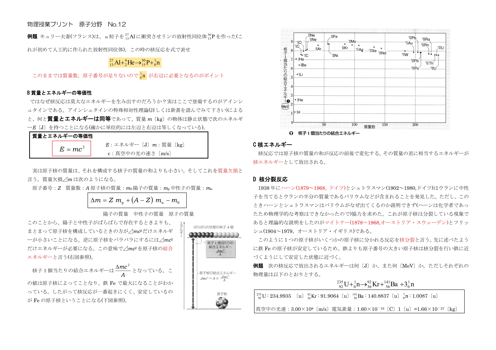
なぜこの現象・法則になるか説明できる
重要事項・公式を見ずに言える
典型問題で式を立てる順序が分かる
No.13 核反応・核分裂・核融合の実戦計算
① 理解レイヤー
1. 反応熱（発生エネルギー）$Q$ の算出ルール
2. ウラン235の典型的な核分裂反応式
3. 重水素-三重水素（D-T）核融合反応式
② 30秒再現チェック
本文をいったん見ないで、次の問いに答える。答えられなければ、元PDFまたは上の解説に戻る。
- 核反応式で質量数・原子番号をどう合わせるか？
- 反応前後の質量差から発生エネルギー Q をどう求めるか？
- 核分裂と核融合の違いを説明できるか？
元PDF No.13（クリックで表示）
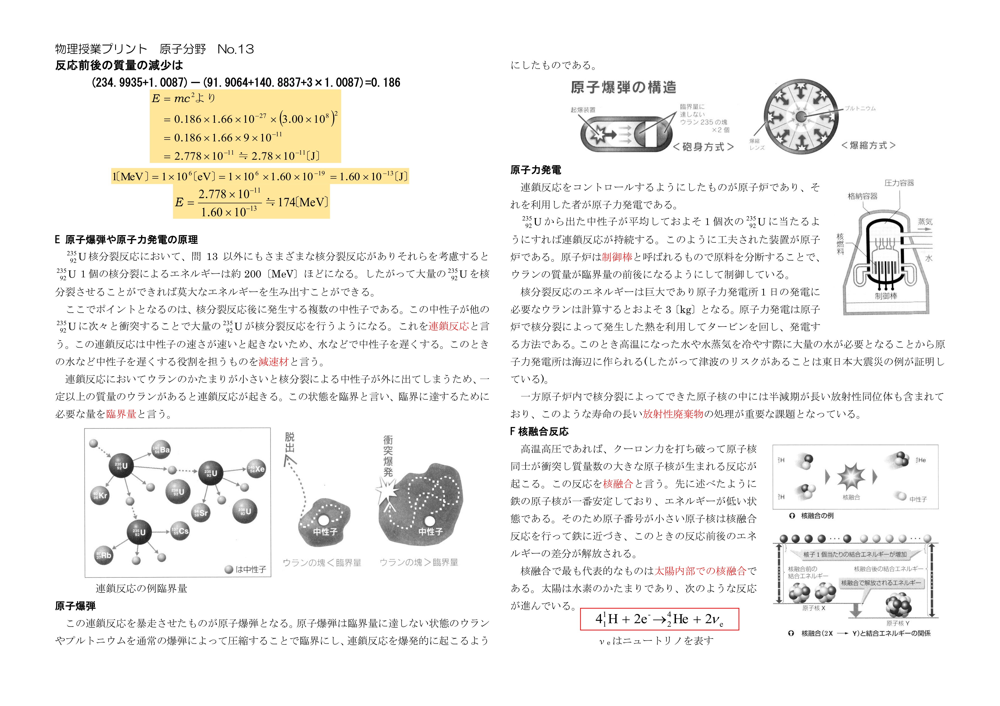
なぜこの現象・法則になるか説明できる
重要事項・公式を見ずに言える
典型問題で式を立てる順序が分かる
No.14 素粒子分類と自然界の4つの基本相互作用
① 理解レイヤー
1. 素粒子の分類体系
- クォーク（Quarks）: 6種類（アップ $u$, ダウン $d$, チャーム $c$, ストレンジ $s$, トップ $t$, ボトム $b$）。強い力を受ける。
- アップクォーク $u$: 電荷 $+\frac{2}{3}e$
- ダウンクォーク $d$: 電荷 $-\frac{1}{3}e$
- 陽子 $p$: $u + u + d \implies \left(+\frac{2}{3} +\frac{2}{3} -\frac{1}{3}\right)e = +1e$
- 中性子 $n$: $u + d + d \implies \left(+\frac{2}{3} -\frac{1}{3} -\frac{1}{3}\right)e = 0$
- レプトン（Leptons）: 6種類（電子 $e$, ミューオン $\mu$, タウ $\tau$, 電子ニュートリノ $\nu_e$, ミューニュートリノ $\nu_\mu$, タウニュートリノ $\nu_\tau$）。強い力を受けない。
2. 自然界の4つの基本相互作用（力）比較
| 力の名称 | 相対的な強さ | 媒介する粒子（ゲージ粒子） | 作用距離・役割 |
|---|---|---|---|
| 強い力 | $1$ | グルーオン | $\approx 10^{-15}\text{ m}$（クォーク・核子を結びつける） |
| 電磁気力 | $10^{-2}$ | 光子（フォトン） | 無限遠（静電気力・ローレンツ力・原子の結合） |
| 弱い力 | $10^{-13}$ | $W/Z$ ボソン | $\approx 10^{-18}\text{ m}$（$\beta$崩壊を引き起こす） |
| 重力 | $10^{-38}$ | 重力子（グラビトン・未発見） | 無限遠（万有引力・天体運動） |
② 30秒再現チェック
本文をいったん見ないで、次の問いに答える。答えられなければ、元PDFまたは上の解説に戻る。
- 素粒子をハドロン・レプトン・ゲージ粒子などにどう分類するか？
- クォークとハドロンの関係を説明できるか？
- 自然界の4つの基本相互作用を区別できるか？
元PDF No.14（クリックで表示）
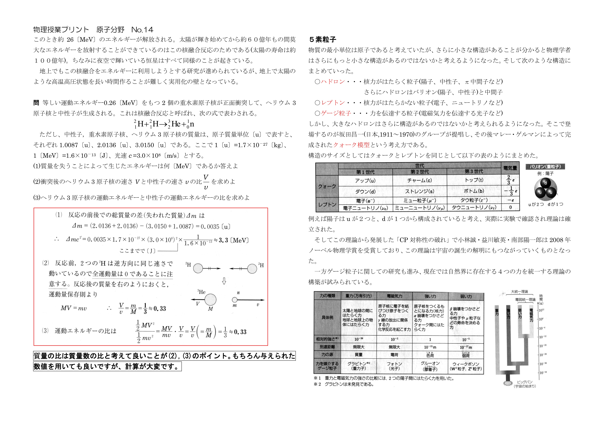
なぜこの現象・法則になるか説明できる
重要事項・公式を見ずに言える
典型問題で式を立てる順序が分かる
83〜90分：全範囲の横断復習
ここで初めて「横に並べて比較」する。 各単元の学習中に無理に関連づけようとせず、最後に混同しやすい概念を整理する。
| 比較 | 確認すること |
|---|---|
| 光電効果 ↔ コンプトン効果 | どちらも光の粒子性に関係するが、何が観測され、どの式を使うか。 |
| α崩壊 ↔ β崩壊 ↔ γ線 | 放出されるもの、質量数・原子番号の変化。 |
| Bq ↔ Gy ↔ Sv | それぞれ何を測る単位か。 |
| 核分裂 ↔ 核融合 | 何が起こり、なぜエネルギーが放出されるか。 |
| ラザフォード模型 ↔ ボーア模型 | 前者の問題点と、後者が導入した仮説。 |
87〜90分：最終30秒チェック
- No.1〜14を見て、それぞれ「何の単元か」を一言で言う。
- 各単元から最重要公式または重要関係を1つ思い出す。
- 「この公式は、どんな問題で使う？」を言う。
- 思い出せなかったNo.だけ本文に戻る。
合格ラインの考え方：すべてを同じ深さで暗記するのではなく、まず全14単元について「説明できる・式を選べる・典型計算の道筋が分かる」状態を作る。その後、弱点だけ戻る。